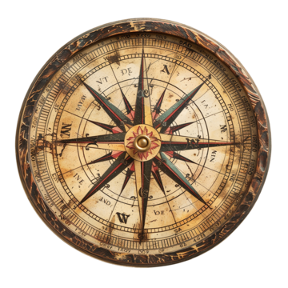

El Contador de Historias
☠️ CAPÍTULO V: Cuentos y Leyendas
Comienzo del capítulo
Mostrar Travesía
Mostrar Preparación de Aventura
Mostrar Momentos Narrativos
Mostrar Éxitos
Mostrar Objetivos
Aparición de Enemigos
Historia
← Listado de Campañas

Progreso de Historia